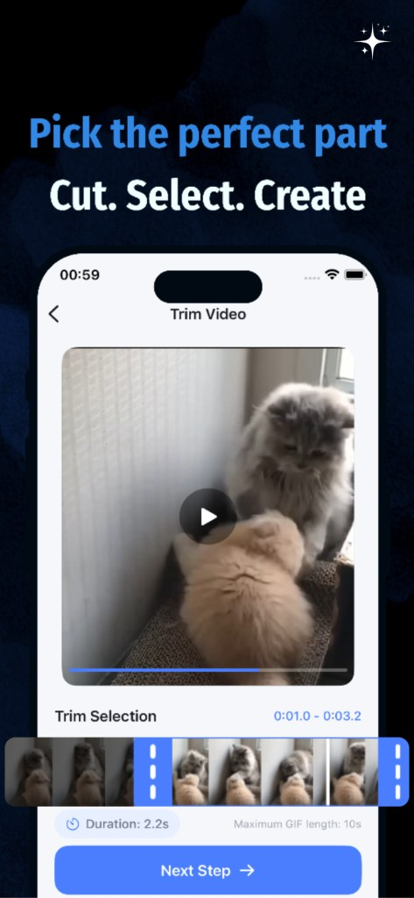
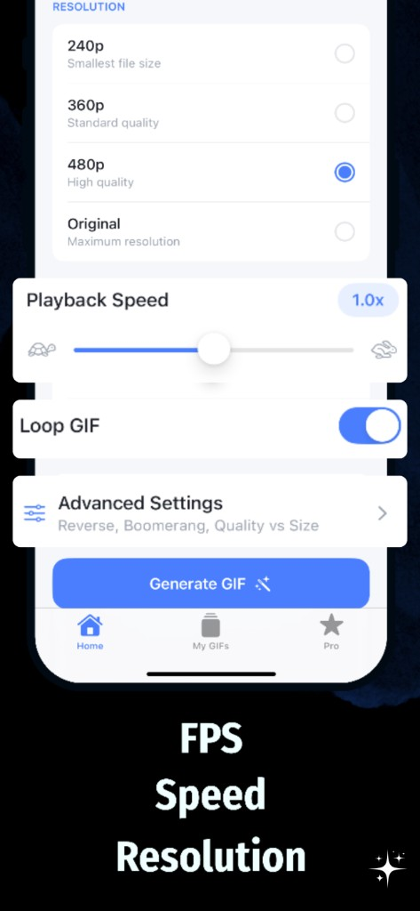
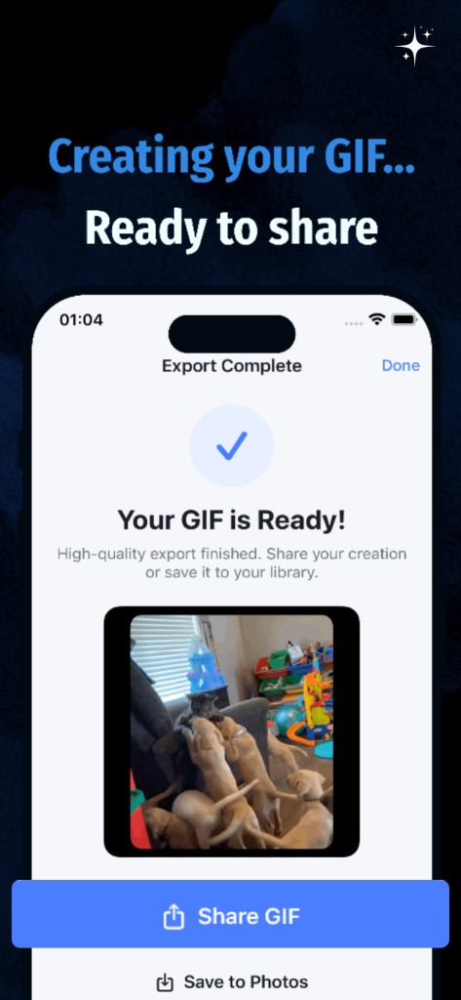

将任意视频变成 GIF——就这么简单。
几秒钟即可裁剪、自定义并导出高质量 GIF。无需上传，无需账号——一切都留在你的 iPhone 或 iPad 上。
免费开始 · 随时取消 Pro · iOS 16+
为注重隐私的 GIF 制作而打造
100%
设备端处理
43,892+
已转换视频
数秒
即可导出 GIF
Web GIF Studio
100% 浏览器本地离线计算 · 零服务器上传 · 零流量消耗
选择或拖拽文件到这里
支持 MP4、MOV、WebM，100% 浏览器本地离线转换，不消耗流量不上传云端
强大功能
制作 GIF 所需的一切
简单而强大的工具，将视频转换为完美的 GIF——全部在你的设备上完成。
视频转 GIF
从「照片」或「文件」中选择任意视频，立即将其转换为流畅、高质量的 GIF。
精准裁剪
使用直观的时间轴选择完美片段——从 0.5 到 10 秒。
完全自定义
在编辑时通过实时预览控制帧率、分辨率、速度和循环设置。
倒放与回旋镖
倒序播放或制作无缝的回旋镖循环。Pro 版本可用。
此外：
区别所在
别再上传，开始创作。
看看设备端 GIF 制作如何改变体验。
没有设备端应用
上传并等待
- ✕视频被上传到未知服务器
- ✕导出需要账号
- ✕对质量的控制有限
- ✕通过网络处理速度慢
- ✕对内容存在隐私顾虑
使用 GIF Maker
私密且快速
- ✓100% 设备端处理
- ✓无需账号
- ✓完全控制帧率、速度和分辨率
- ✓几秒内快速导出
- ✓你的视频绝不离开你的设备
100%
在你的设备上处理
使用方法
几分钟从视频到 GIF
三个简单步骤。无需复杂工具。
01

选择与裁剪
从「照片」或「文件」中选择视频，然后裁剪出完美片段。
02

自定义
通过实时预览设置帧率、分辨率、速度和效果。
03

导出与分享
保存到照片或即时分享。几秒即可完成。
隐私优先
你的视频只留在你的设备上
无上传。无追踪。所有转换均在你的 iPhone 或 iPad 上本地完成。
- ✓绝不上传到服务器
- ✓无需账号
- ✓在设备端存储你的 GIF 库
常见问题
常见问题解答
关于 GIF Maker 你需要了解的一切。
不会。所有视频处理都完全在你的设备上进行。你的视频和 GIF 绝不会离开你的 iPhone 或 iPad。
无需账号。下载应用后即可立即开始制作 GIF。
GIF Maker 支持 MP4、MOV 和 QuickTime 格式——任何可通过「照片」或「文件」访问的视频。
免费用户可制作最长 5 秒的 GIF。Pro 订阅用户可制作最长 10 秒的 GIF。
前往「设置」→ Apple ID →「订阅」，找到 GIF Maker，然后点按「取消订阅」。
可以。打开应用，进入 Pro 标签页，使用同一 Apple ID 点按「恢复购买」。